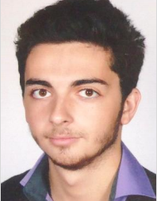

Clément ALLAIN
22 ans
CONTACT
clement.allain@centrale.centralelille.fr
+33 (0) 6 86 20 85 36
28 rue Joffre, Chartrettes, 77590
LANGUES
Français (langue maternelle)
Anglais courant (FCE obtenu en 2012)
Espagnol (scolaire)
Chinois (débutant, 2ème année)
ASSOCIATIONS
Commission pyrotechnique de Centrale
Lille : Président
Foy’s team : asso du foyer de l’école,
organisation de soirées (300 personnes),
membre actif
Liste BDE : développement du site web,
organisation de nombreux évenements
Gala, BDS, BDE, ICAre : responsable web
ENTREPRENEURIAT
Projet de création d’une start-up deeptech en novembre 2018 avec le soutien de la Chaire 4.0 de l’École Centrale de Lille et son responsable Pr. Z. Lafhaj
En phase de prototypage et financement
Étudiant en recherche d’un stage de césure à partir du 1er mars 2019
FORMATION
Ecole Centrale de Lille
2017-2020
- Élève ingénieur en 2ème année, formation généraliste
- Data Science, Algorithmique avancée, Système et Réseaux, Rétroengineering & re-conception Traitement du signal, CAO, Gestion de projet, Calcul de structures en Génie Civil, Science des matériaux
Lycée Chaptal, Paris
2014-2017
- Classes Préparatoires aux Grandes Écoles : MPSI – MP * option informatique
EXPERIENCE
GRDF,Paris : Bilan qualité comptable
Janvier-Février 2017
Utilisation d’outils d’analyse de données pour produire un bilan sur la qualité du suivi des chantiers de renouvellement d’ouvrages collectifs
- Mise en place de KPI opérationnels
- Traitement de données avec Python et librairies graphiques
- Réalisation d’une application réalisant un bilan suivi de projet sous Access
Junior entreprise (Centrale Lille Projets) : réalisateur
2017-
- Réalisation de missions (développement web full-stack, protoypage)
COMPETENCES & INTERETS
- Projets personnels : nombreux projets pluridisciplinaires DIY, travaux autour de la théorie du Chaos et de la génération de nombres aléatoires pour la cryptographie (2013-2017)
- Outils informatiques (Linux, Réseau, Pack Office) : Maîtrise professionnelle
- Sciences et informatique :
- Développement (autodidacte : HTML5, PHP, SQL, Python, C)
- Astronomie (pratique en club)
- Électronique
- Informatique embarquée
- Finaliste du concours national d’informatique Prologin en 2017
- Participation aux Student Computer Experiment. Vainqueur 2014
- Serrurerie : crochetage avancé et techniques d’ouverture fine
- Sports : jogging, natation, tennis et VTT